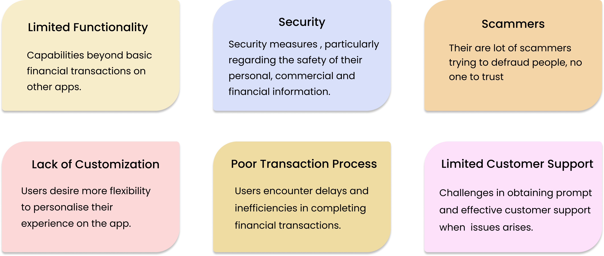
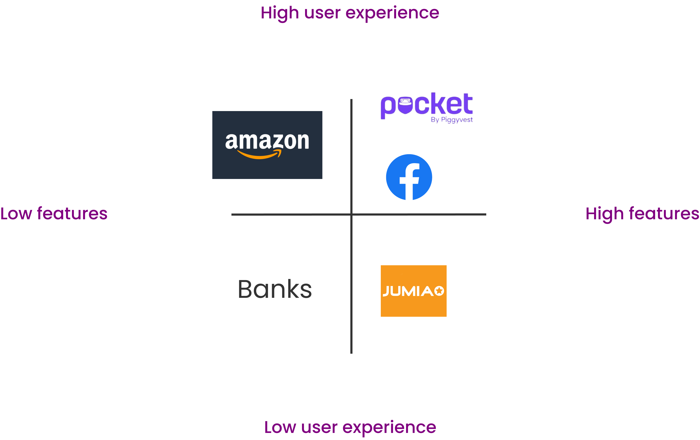
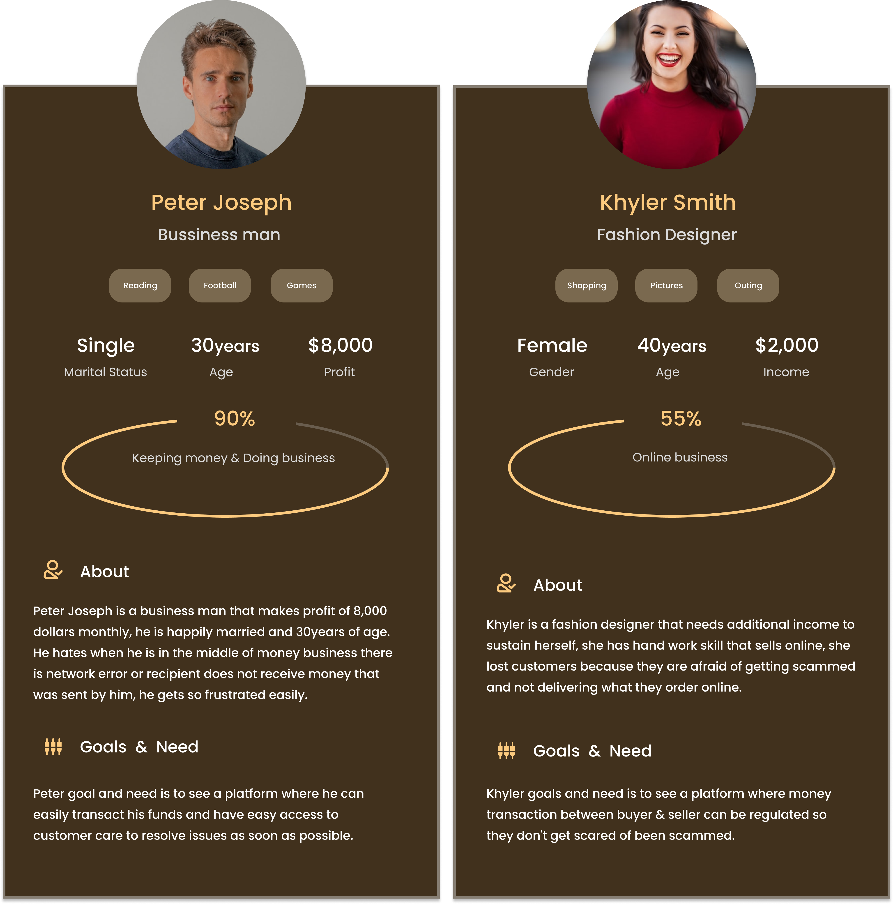

Ipay Fin-tech ( Web, IOS and Android )
Revolutionize your financial experience with IPAY, experience seamless financial management, personalized recommendations, and advanced security in one intuitive platform.

My Role
UI Designer and
Project Lead
The Team
3x UX Designers
5x UI Designers
15x Developers
My Role
Collaborate with Stakeholders
Create wire-framing & Prototypes
Virtualize & Iterate on Design concept
Design intuitive user interfaces
Conduct Usability Testing
Gather feedback
Improve UI Design
Collaborate with Developers
Stay Updated with Industry Trends
Maintain Design Consistency
Software Used

What is IPAY
IPAY is a cutting-edge fintech and business app designed to revolutionize financial transactions and optimize business operations. With a user-friendly interface and robust features, IPAY empowers individuals and businesses to manage their finances seamlessly. It offers a range of services, including secure payments, real-time financial analytics, invoicing, expense tracking, and integrated accounting solutions. Whether you're a freelancer, small business owner, or a large enterprise, IPAY provides a unified platform to simplify financial management, improve cash flow, and drive business growth. By leveraging advanced technologies and incorporating industry-leading security measures, IPAY ensures the highest level of data protection and transactional integrity. Join us as we explore the challenges, triumphs, and innovative solutions that propelled IPAY to the forefront of the industry.
The Genesis
It all began with a vision to streamline financial transactions and empower individuals to take control of their money. The founders of IPAY envisioned a user-friendly platform that would simplify payments, fund transfers, and bill payments, revolutionizing the way people interact with their finances.
Designing the Future of Fin-tech
A team of talented UI/UX designers embarked on a mission to craft a visually stunning and intuitive interface for IPAY. Their meticulous attention to detail ensured that every user interaction was smooth and seamless, providing a delightful experience from the moment users accessed the app.

Project Goal
The goal of the IPAY project is to develop a versatile fintech and business app that seamlessly integrates financial transactions, online shopping, and business management, providing users with a comprehensive platform to transact, showcase products and services, and promote their businesses effectively
Objective of empowering Financial & Business Transactions Growth through IPAY.
My team were able to brainstorm and draft out what we want ipay to achieve through business objective of this project
- Objective #1: Deliver an intuitive and visually appealing app interface that ensures easy navigation and enjoyable interactions for individuals and businesses.
- Objective #2: Develop a robust e-commerce module within IPAY, enhancing convenience and safety for users to browse, search, and purchase goods and services from various sellers.
- Objective #3: Provide comprehensive tools for businesses to showcase products, manage inventory, process orders, and engage with customers effectively, fostering growth and success.
- Objective #4: Offer marketing and promotional features to help businesses gain visibility, attract customers, and boost sales, contributing to long-term growth.
- Objective #5: Implement robust security measures to safeguard user data and financial transactions, instilling confidence and trust in IPAY's security protocols.
Design Process
Discover
User Research
User Interview
Competitive Analysis
Define
User Persona
Empathy Mapping
Ideated Features
Ideate
Site Map
User Journey
User Flow
Design
Wire Frame
Lo=Fi
Prototype
Testing
Feedback
Conclusion
Future Features
IPAY: Revolutionizing Unresolved Problem Challenges in the Industry
In the bustling streets of commerce, where individuals and businesses yearned for a seamless and empowering digital experience, a problem loomed like a shadow over their aspirations. Transactions were cumbersome, fragmented, and fraught with inefficiencies, leaving users craving a solution that would bring ease and convenience to their financial endeavors. Enter IPAY, a transformative fintech and business app that sought to address this challenge head-on. The problem at hand was clear a lack of integration and cohesion in the digital realm, hindering individuals and businesses from realizing their full potential.
Other Problem Statements and Challenges includes :

User Research
Unveiling Key Questions: To Understand the Needs and Expectations of IPAY Users
My team's journey to develop IPAY involved an extensive user research process. We conducted interviews and observed users' financial and business activities, listening to their stories and challenges. Inspired by these interactions, the team brainstormed critical questions that would reveal users' needs and desires. Carefully crafted, these questions aimed to uncover underlying motivations and guide the app's development. By asking the right questions, the team gained valuable insights that shaped IPAY into a solution that truly resonated with users. Problem questions includes
- What are the key financial challenges users face in their daily lives?
- How do users currently manage their financial transactions and online shopping activities?
- What features or functionalities are users looking for in a fintech and business app?
- What are the pain points or frustrations users experience when conducting financial transactions or engaging in online shopping?
- How do users perceive the security and trustworthiness of existing fintech and e-commerce platforms?
- How do users envision incorporating their businesses or products into a fintech app for wider reach and growth?
- Are there any specific financial or business management challenges faced by users in their respective industries?
- What are users' thoughts on incorporating marketing and promotional features within a fintech app to support their business growth?
Survey Analysis
In our quest to address the identified problems, we embarked on a survey journey that yielded tremendous results. A total of 300 individuals graciously shared their thoughts and experiences, serving as a guiding light in our problem-solving endeavors. Now, let's delve into the treasure trove of insights obtained from the thought-provoking questions asked during the survey. This summary analysis will pave the way for innovative solutions and pave the path to a better user experience.

Revealing User Perspectives: Analyzing User Research Findings and Recommendations
From our research findings, we discovered important insights that shed light on what our users truly desire and struggle with. These insights became our guiding compass, leading us to create a solution that truly meets their needs and aspirations. With each revelation, we gained a deeper understanding of their stories, allowing us to shape IPAY into a powerful tool that empowers and transforms their financial experiences. The following key insight from user survey emerged;
- Insight #1: Users expressed frustration with the limited functionality of the app, primarily focused on financial transactions.
- Insight #2: The majority of respondents emphasized the importance of security and trust in their financial transactions.
- Insight #3: Users expressed interest in an integrated e-commerce feature within the app, allowing them to conveniently shop for goods and services.
- Insight #4: A significant portion of users indicated a desire for personalized offers and promotions tailored to their preferences..
- Insight #5: There was a strong demand for accessible customer support channels and prompt resolution of issues or concerns.
- Insight #6: Users emphasized the need for continuous innovation and adaptation to meet their evolving needs in the fast-paced fintech landscape.
Identifying Pain Points: Uncovering User Challenges and Frustrations
Through a thorough analysis of the survey data, a card sorting exercise was conducted to categorize and consolidate the identified problems. Similar or interconnected issues were grouped together to unveil the following pain points. This process allowed for a comprehensive understanding of the challenges faced by users, enabling us to prioritize and address these pain points effectively.
Competitive Analysis
Competitive Landscape Analysis: Assessing the Market and Industry Players
In our quest for excellence, we embarked on a journey to delve into the market landscape and understand our competitors. Through meticulous research, we analyzed similar products and examined the strategies of five key companies in the industry. This comprehensive exploration allowed us to gain insights into their strengths and weaknesses, empowering us to position IPAY as a unique and compelling solution in the market.
Our journey of discovery led us to analyze and categorize the offerings of key players in the market. We found that Pocket, Facebook, and Amazon provide multifaceted platforms with diverse features beyond finance. Traditional banks, on the other hand, focus solely on financial services, while Jumia specializes in online shopping. This comprehensive competitive analysis enabled us to identify distinct opportunities for IPAY to differentiate itself and create a remarkable user experience

User Persona
Understanding Our Users: Creating User Personas
In our quest to deeply understand and empathize with our users, we embarked on a journey of discovery to create user personas. We delved into the lives, aspirations, and pain points of individuals who would benefit from IPAY, giving them faces, names, and stories. Through extensive research, interviews, and analysis, we unveiled the diverse characters that represent our user base. These user personas breathe life into our design process, allowing us to envision their needs, preferences, and behaviors. With each persona, we gain valuable insights, enabling us to tailor IPAY to their unique experiences and provide solutions that truly resonate with their lives.
Empathy Mapping: Understanding User Thoughts and Feelings
In order to truly understand and empathize with our users, we delved deep into their thoughts, feelings, and motivations through the process of empathy mapping. This powerful technique allowed us to step into their shoes, seeing the world through their eyes and experiencing their challenges and aspirations. By capturing their emotions, needs, and desires, we gained invaluable insights that guided us in crafting a solution that resonates with them on a profound level. Through empathy mapping, we were able to bridge the gap between our team and the users, creating a bond built on understanding and compassion.

Ideated Features: Transforming Insights into Innovative Solutions
My team embarked on a creative journey of ideation. We unleashed our imagination and harnessed the power of innovation to conceptualize a range of features and solutions that would revolutionize the way people engage with IPAY. Drawing inspiration from the stories and experiences of our users, we carefully crafted each idea, aiming to deliver a seamless and empowering user experience. These ideated solutions became the building blocks for a transformative app, designed to simplify financial transactions, enhance online shopping, empower businesses, and provide a secure and trustworthy platform for all. With enthusiasm and determination, we embraced the challenge of turning these ideas into reality, ready to bring a new era of convenience, efficiency, and growth to the fintech and e-commerce landscape.

Ideate Phase
User Flow: Navigating the IPAY Experience
Embark on a seamless journey with IPAY's user flow, designed to simplify your financial and commercial activities. From payments to online shopping, each step is carefully crafted to ensure a smooth and intuitive experience. The user flow of IPAY guides you effortlessly through the app, allowing you to navigate different features with ease. With a focus on convenience and simplicity, IPAY's user flow streamlines your interactions, making it easy to manage your finances and engage in commercial transactions. Enjoy a frictionless experience as you navigate through IPAY's user flow and accomplish your tasks effortlessly.

Information Architecture
Imagine stepping into a grand library where every book is neatly organized, guiding you to the exact knowledge you seek. IPAY's information architecture is akin to a well-organized library, offering a seamless and intuitive app experience. It strategically organizes information, ensuring easy navigation and quick access to desired features. With a logical hierarchy and intuitive categorization, IPAY guides users effortlessly through various functionalities. Whether it's financial transactions, online shopping, or business management, IPAY's information architecture simplifies the user journey, allowing users to navigate with ease and find what they need efficiently.

Design Phase
Designing the Future: Transforming Vision into Reality for IPAY
In the design phase, we embark on a creative journey to transform our vision into a tangible reality. Guided by user insights and the ideated features, we dive into the world of colors, shapes, and layouts to craft a visually stunning and intuitive user interface. Every pixel is carefully placed, every interaction meticulously designed to evoke delight and enhance user experience. With attention to detail and a deep understanding of our users' needs, we create a design that not only captivates the eye but also guides users seamlessly through the app. The design phase is where imagination meets functionality, and where the magic of IPAY truly comes to life.


Testing Phase
Testing and Iteration: Enhancing the User Experience through Rigorous Evaluation
In order to ensure that our product truly meets the needs of our users, we conducted usability testing. This involved inviting individuals who represent our target audience to try out our prototype and provide their valuable insights. Through this process, we gained firsthand feedback from 20 participants, allowing us to evaluate the product from both the finance and business perspectives. Their feedback, both positive and negative, provided us with invaluable guidance for improving the product and solving the user's problems effectively.
Negative Feedbacks
- Typo errors: Users noticed several typos throughout the app, which affected the overall user experience and gave the impression of a lack of attention to detail.
- Confusing plugs: Users found the term "plugs" confusing and unclear, leading to confusion about its purpose and functionality within the app.
- Confusion with onboarding categories: Users felt unsure about which category they should select during the onboarding process, resulting in confusion and uncertainty about their user type.
Positive Feedbacks
- Intuitive user interface: Many users appreciated the app's user-friendly interface, stating that it was easy to understand and navigate.
- Secure and reliable: Users praised the app's robust security measures and expressed confidence in the safety of their financial transactions.
- Convenient transaction process: Several users commended the seamless and hassle-free transaction process, highlighting the convenience of making payments and transfers.
- Comprehensive features: Users were impressed by the app's range of features, including online shopping, business management tools, and the ability to track and manage finances in one place.
Resolving User Issues and Concerns
In response to valuable user testing feedback, we made significant improvements to the interface of IPAY. Typo errors were diligently addressed, ensuring a polished and error-free experience. Confusing terminology was replaced with more intuitive and descriptive language, enhancing user understanding. The onboarding process was streamlined, providing clarity in selecting the appropriate category. To address security concerns, robust measures were implemented to protect user data. These enhancements demonstrate our unwavering commitment to creating a seamless and trustworthy experience for our users.
Lessons learnt from this project
Lessons and Takeaway
Throughout the development journey of IPAY, we have gained valuable insights and lessons that have shaped our approach and enhanced our understanding of user needs. By adopting a user-centric approach, conducting thorough testing, fostering effective communication, and embracing an iterative design process, we have been able to address user concerns and create a seamless and trustworthy platform. Additionally, our competitive analysis has provided us with insights to differentiate ourselves in the market, while empathy and empowerment have guided us in delivering meaningful solutions. Collaboration, adaptability, and a commitment to continuous improvement have been key drivers in our quest to revolutionize the fintech and commercial business industry.
- User-Centric Approach: Placing the needs and expectations of users at the forefront is essential for creating a successful product like IPAY. Understanding user pain points and designing solutions that address them directly is key.
- Thorough Testing: Conducting comprehensive user testing throughout the development process helps identify potential issues and concerns early on. This allows for timely adjustments and improvements to enhance the user experience.
- Collaboration and Adaptability: A collaborative and adaptable team culture is necessary for success. Being open to new ideas, feedback, and being responsive to changing requirements and market dynamics ensures that IPAY remains relevant and competitive.
- Iterative Design: Embracing an iterative design process allows for continuous refinement and improvement. By incorporating user feedback and insights, IPAY evolve and adapt to meet the changing needs and preferences of its users.
- Security and Trust: Building robust security measures into the app is vital to instill trust in users. Ensuring the safety of their data and financial transactions establishes IPAY as a reliable and trustworthy platform.
- Competitive Analysis: Regularly analyzing the market and competitors helps IPAY stay innovative and differentiate itself from others in the fintech and commercial business industry. Understanding the landscape allows for the identification of unique value propositions.
- Empathy and Empowerment: Developing a deep understanding of user pain points and empowering them with solutions that enhance their financial experiences is crucial. Putting yourself in the users' shoes fosters empathy and leads to more meaningful and impactful solutions.


Let's Connect and Transform Your Product into a Business Goal !
@2023 Hafsoh Omotosho-Adeniran | Designed & Developed by Hafsoh Omotosho Legal Designer | Hafsohomotosho@gmail.com